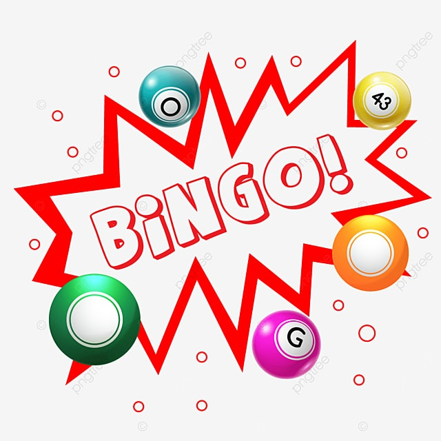
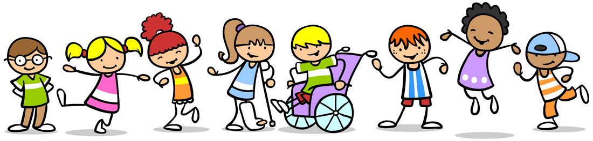

Objetivos
Objetivo: Identificar la representación gráfica y en la semirrecta numérica de fracciones.
Objetivo: Identificar la representación gráfica y en la semirrecta numérica de fracciones.
DCD a desarrollar: M.3.1.34. Representar fracciones en la semirrecta numérica y gráficamente, para expresar y resolver situaciones cotidianas.
Tiempo: 40 minutos aproximadamente
Materiales:
Descripción de la Actividad
En primer lugar, se tiene que realizar las diferentes cartillas para el bingo. A diferencia del bingo tradicional, en lugar de números, tendrá la representación gráfica y en la recta numérica de algunas fracciones. Las bolas del bingo, así como las cartillas, se tendrán que adaptar. En lugar de poner números naturales, se ubicarán las representaciones logarítmicas de algunas fracciones. Para hacerlo más dinámico, los estudiantes deberán elaborar sus propias cartillas en el cartón. Deberán recortar rectángulos y dibujar una cuadrícula de 5 x 5. En cada casillero, deberán representar de manera gráfica o en la recta numérica fracciones. Una vez que estén listas las cartillas, el docente comenzará el juego. El docente sacará una bola y en voz alta mencionará la fracción, los chicos deberán buscar en sus cartillas la representación y marcarla. El juego termina cuando cualquier estudiante logre completar una línea diagonal, horizontal o vertical.

-Se puede adaptar el tamaño de las cartillas a las habilidades matemáticas de los alumnos.
-Se puede dar más tiempo para que puedan identificar la fracción.
-Se puede formar grupos para que se puedan apoyar mutuamente.
-Se pueden implementar colores más llamativos y vistosos para ayudar a los estudiantes a identificar las fracciones.

Obra publicada con Licencia Creative Commons Reconocimiento No comercial Compartir igual 3.0